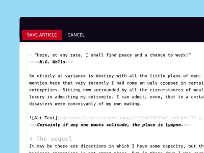
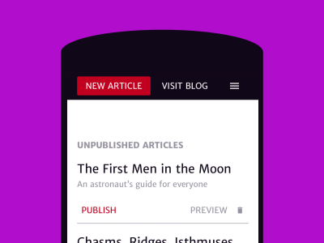
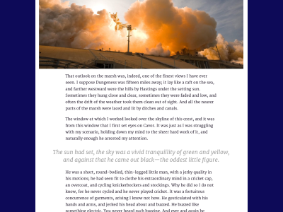

Better responsive publishing, build with Ruby on Rails
A simple, open source blog engine
LINES is an open source blogging platform designed for mobile publishing needs. You work in a clear, responsive backend where you write with a distraction-free markdown editor, and where publishing your articles is dead simple. Readers enjoy your writing, not least because it’s perfectly readable on all screens.
Installation
LINES is an OSS project: the code and all the sources are on GitHub and we have a gem version ready to install for you at RubyGems. Have a look at the readme, fork LINES, or install the gem.
1. Add the gem to your Gemfile
gem 'lines-engine'
2. Run ”bundle“
bundle
3. There is an installation task that will guide you through the rest of the installation process. Just switch to your application directory and run
rails g lines:install
4. Adjust settings for Lines in the newly generated
config/lines_config.yml
5. Run database migrations:
rake db:migrate
- Writing and editing are complex. Our sophisticated markdown editor helps you think well while keeping your mind on the text.
- Organize, preview, and publish your articles from anywhere, no matter if you’re on the road with a smartphone or on the big screen.
- Shaping text so it reads well is a science, especially when it must be optimized for any screen size. We studied this so you don’t have to.
{kind=link}
{kind=link}
{kind=link}
More Features
- Login- & Password Management
- Multiple Author Management
- RSS Feed integration
- Feature Articles
- Article Preview
- Image Upload & Processing
- Article Teasers
- GFM (GitHub Flavored Markdown)
- Tags
- Social Media Integration
- Include Documents for Download
- Code Highlighting
Please contribute, it’s open source
We built LINES as a plugin because we couldn’t find a system that served our responsive publishing requirements for Rails.
Customizing LINES to your needs and preferences shouldn’t be a problem for you as a developer, because we adhered closely to best practices and code conventions.
The complete documentation is available on RubyDoc.info. We’re constantly working on the blog platform, maintaining it and keeping it up-to-date on GitHub.
LINES is an open source project for a reason. It needs people, work, and time to mature. You can help make this project great by giving us feedback, telling us about your concerns, and voicing questions.
Contact our developers: Jochen Greif & Max Boll